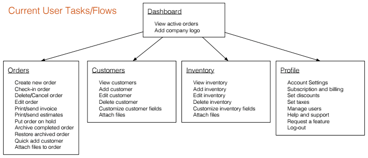
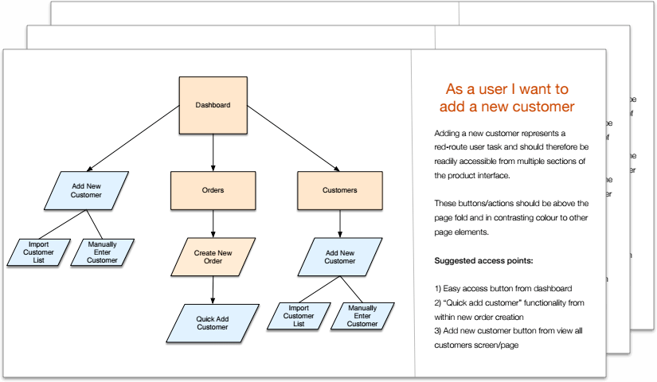
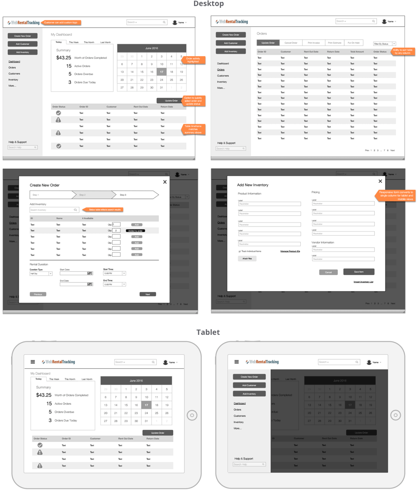
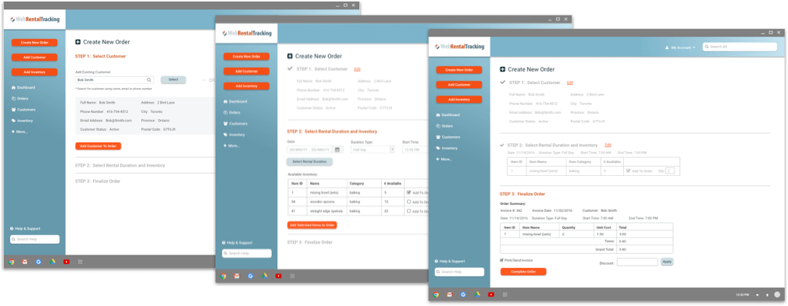
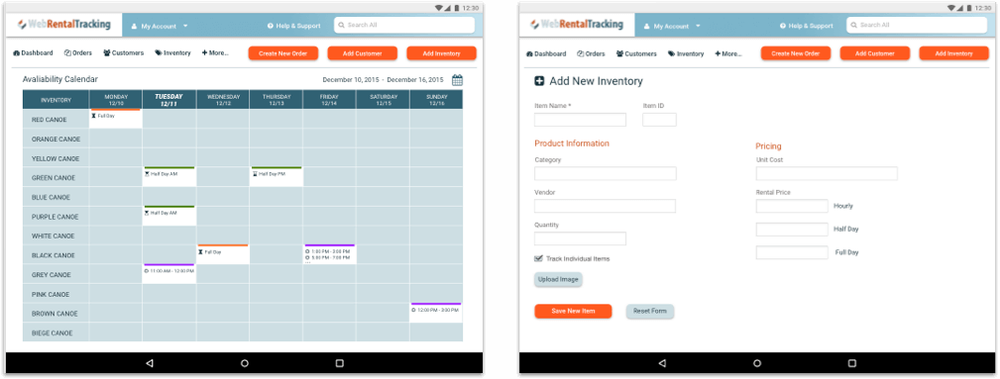

Web Rental Tracking is a cloud service that allows users to create/edit orders and manage their customer and inventory databases. When I was hired a beta version was in production for companies managing internal rentals. The client wanted me to help evolve the product and tailor it for companies managing external rentals. This involved implementing new functionality and creating a new user interface.
In order to better understand this industry and find out where the product currently fit within the market I conducted a competitor analysis.
I focused on companies with a similar target market: small to mid-sized rental companies.
Along with the analysis, I included a detailed list of suggested product enhancements. This list included features that the top competitors had but my client was missing.
It was very important to have a clear picture of the product’s current content and structure. I conducted a full content inventory to assess what changes would be necessary to improve the information architecture and enhance the product’s functionality.
As the list of current and desired functionality grew, it became important to prioritize each item. To do this I completed a red route analysis. The red routes (items in the red squares) are the critical user tasks for the product and these together represent the minimum viable product (MVP).
During design and development red routes should always be prioritized, user-centric and remain obstacle-free
I created user flows for each red route task. This helped ensure that each flow was prioritized and obstacle-free. I made sure to include multiple access points, a clear start and finish and illustrated steps in sequential order.
Once I had a clear list of requirements for the new design I conducted a card sorting exercise. This was done to better understand how people expect the content to be organized.
In the card sorting session, participants were asked to organize tasks into pre-defined categories in a way that made the most sense to them. The categories given were the main navigation of the application and included an “other” category.
The results were displayed in a popular placement matrix. This demonstrated the percentage of participants that sorted a task into each category.
I created wireframes for desktop and tablet screens. Through the wireframes I was able to design user flows, navigation, and interactions. The wireframes were annotation for clarity and technical details.
Equiped with my inital design, I took to the streets to do some field research. I visited three companies that rent outdoor equipment such as recreational boats and bicycles. During each interview I asked questions about their current rental process and watched them carry out common tasks. We spoke about priorities and frustrations throughtout their day and afterwards I showed them my current design ideas to get their feedback.
The knowledge I gained from these interviews was priceless, changing my focus from the application's visual design to its functionality. The three biggest changes resulting from this research are outlined below:
Users found the following elements problematic:
What did users’ want from their dashboard?
The number one priority for users was to see current availabilities for their top inventory. This would allow them to quickly answer customer inquiries and create new orders. In my next design I created a weekly calendar view by inventory items. The date picker lets you select a time period and the universal search bar lets you search for specific inventory. You also have the ability to click on a specific day to see the daily view.
Users found the following elements problematic:
In my next design I removed the modal window and instead used the full width of the page. When a user completes a step they are no longer shown the progress bar and instead are shown a check mark and a summary of their selection. There is an edit link next to completed steps allowing the user to make changes. Also the user now first selects their rental duration and then a table loads with available inventory.
Users found the following element problematic:
Users did not like the hidden menu on the tablet design. The important call-to-action buttons were hidden and the menu made it difficult for users to toggle between pages.
In my next design I removed the hidden menu and instead replaced the performance summary with a navigation menu and call-to-action buttons. I did this because the performance summary was identified as a nice-to-have, but not a necessity.
"Christina's research helped us better understand our users and tailor our design to their needs. We were impressed by her depth of knowledge in UX design. She keeps product usability and the overall product vision at the top of her mind."
If you like what you see and want to chat please contact me!
+91 9159978147
Bengalore, India